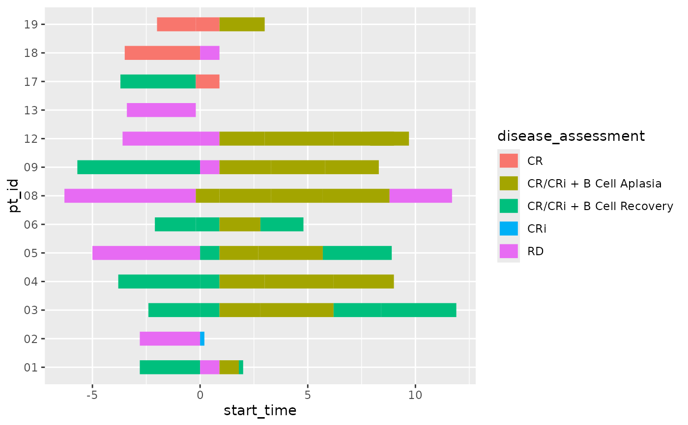

Visualize individual record response trajectories over time using a swimmer plot.
Usage
ggswim(
data,
mapping = aes(),
arrow = NULL,
arrow_colour = "black",
arrow_length = unit(0.25, "inches"),
arrow_fill = NULL,
arrow_type = "closed",
...
)Arguments
- data
a dataframe prepared for use with
ggswim()- mapping
Set of aesthetic mappings created by
aes(). If specified andinherit.aes = TRUE(the default), it is combined with the default mapping at the top level of the plot. You must supply mapping if there is no plot mapping. More information about accepted mapping arguments can be found in Aesthetics.- arrow
A column indicating what swim lanes should have arrows applied. The column must be a logical data type (T/F).
- arrow_colour
Border/line color to use for the arrow. Default "black".
- arrow_length
A unit specifying the length of the arrow head (from tip to base). Must be a ggplot2
unit()object. Defaultggplot2::unit(0.25, "inches").- arrow_fill
Fill color/colour to use for the arrow head (if closed). Default
NULL.- arrow_type
One of "open" or "closed" indicating whether the arrow head should be a closed triangle. Default "closed."
- ...
Other arguments passed to
ggswim(), often aesthetic fixed values, i.e.color = "red"orsize = 3.
Details
A swimmer plot is a data visualization used to display individual subject data over time. It shows events or outcomes as points along a horizontal line for each subject, allowing easy comparison and pattern identification.
Aesthetics
ggswim() understands the following aesthetics (required aesthetics are in bold):
xyalphafillgrouplinetypelinewidth
Note: ggswim() does not support mapping using color/colour.
Examples
ggswim(
data = patient_status,
mapping = aes(
x = value,
y = subject_id,
fill = cohort
)
)
